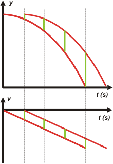

NO ME SALEN
PROBLEMAS RESUELTOS DE FÍSICA DEL CBC
(Movimiento uniformemente variado)
|
|

|
 |
3.22- Dos cuerpos se sueltan desde un mismo
punto a partir del reposo, con una diferencia de
tiempo de un segundo entre uno y otro. Sus movimientos
son de caída libre, sin influencia del aire.
Indique cuál es la afirmación verdadera: |
a) La distancia entre los dos cuerpos aumenta
con el tiempo.
b) Luego de ser soltado el primer cuerpo, las
velocidades de ambos cuerpos en un mismo instante
son iguales.
c) La distancia entre ellos permanece constante.
d) El segundo cuerpo, después de cierto tiempo,
alcanza al primero (suponer que aún no llegaron
al piso). |
|
| Mirá, hay varias formas de resolver esta cuestión. Una es razonar una por una intuitivamente, apoyándonos en ideas, datos, consignas, revelaciones... mmm... dejemos ésta para un día en que nos encontremos en un café. Otra es analizarlo con ecuaciones horarias y sacar conclusiones generales sólidas y algebraicas. La tercera es analizarlo con un par de gráficos representativos de la situación. Te propongo ésa, ¿dale? |
|
|
Ahí están. Las curvas rojas son idénticas, sólo se hallan desplazadas lateralmente un cierto intervalo de tiempo. Las líneas punteadas verticales están espaciadas un segundo. Los segmentos verdes que te dibujé representan cosas interesantes: en el gráfico de posiciones representan la distancia entre los dos móviles. Como ves, conforme avanza el tiempo la distancia se hace mayor.
La explicación nos la dan los segmentos del gráfico de velocidad: son todos iguales. Representan la diferencia de velocidad, o sea, el que salió primero siempre va más rápido que el segundo, aunque los dos van aumentando su rapidez de la misma manera: el que salió antes siempre le saca la misma diferencia de velocidad.
¿Querés verlo en un SR invertido? |
 |
 |
Ahí tenés, ¿te gustó?
No pretendas que te responda las preguntas del enunciado, te la dejé picando en el área chica...
Mirá, te lo cambio por esto: lo voy a tratar de resolver con ecuaciones.
Voy a usar el SR de acá arriba, no el de al lado, ojo.
móvil 1 → y1 = yo — 5 m/s² . t²
v1 = — 10 m/s² . t
móvil 2 → y2 = yo — 5 m/s² (t — 1s)²
v2 = — 10 m/s² (t – 1s) |
|
| |
Ok, para un instante cualquiera mayor que 1 segundo la distancia entre ambos será
y1 — y2 = (yo — 5 m/s² . t²) — (yo — 5 m/s² (t—1s)²)
y1 — y2 = yo — 5 m/s² . t² — yo + 5 m/s² (t—1s)²
y1 — y2 = — 5 m/s² . t² + 5 m/s² (t² — 2ts + 1s²)
te acordás cómo se resolvía el cuadrado de un binomio, ¿no? Bueno, después distribuyo el factor.
y1 — y2 = — 5 m/s² . t² + 5 m/s². t² — 10 m/s . t + 5 m
y1 — y2 = — 10 m/s . t + 5 m
Acá ves clarito, clarito como el agua, que la diferencia aumenta a medida que pasa el tiempo. Y qué pasa con las velocidades. Opero del mismo modo...
v1 — v2 = — 10 m/s² t — 10 m/s² (t — 1s)
v1 — v2 = — 10 m/s² t — 10 m/s² t + 10 m/s
v1 — v2 = 10 m/s
la diferencia de velocidad es constante, no cambia con el tiempo. Viste, no era tan dramático. |
|

no te la pierdas |
|
|
|
| DESAFIO: Primero, contestá una por una las premisas del enunciado con categoría y altura. Segundo, rehacé las demostraciones generales pero para el SR que apunte hacia abajo (así te deja de hacer ruido el asunto de los signos... que todavía te debe estar volviendo loco). |
|
 |
| Algunos derechos reservados.
Se permite su reproducción citando la fuente. Última actualización nov-06. Buenos Aires, Argentina. |
|
|
| |
| |
|